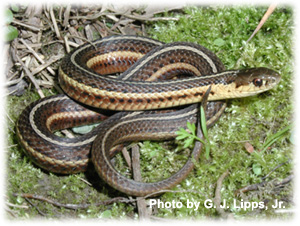
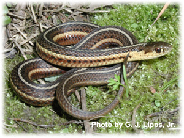

Butler's Garter Snake (Thamnophis Butleri)
Identification
The Butler's Garter Snake is a medium sized (averaging lengths of 15-20 inches), slender snake with three yellow to orange stripes along the length of the body. The background colour can range from brown, black or olive and it may also be possible to discern two rows of dark spots between the side and back stripes. These features do little to distinguish them from most other garter snakes species, but what is unique to this species is the placement of the lateral, or side, stripes. In Butler's Garter Snakes, the lateral stripes are centred on the third scale row up from the ventral scales, and they also overlap the adjacent second and fourth scale rows. This contrasts the lateral stripe placement of other garter snake species. For those hoping to avoid getting close enough to inspect the position of the lateral stripe, there are other features which may help in their identification! The head is unusually small for a garter snake, and, when excited, the effort this snake expends to escape seems to go more towards thrashing in place than to getting away.
Distribution and Status
The distribution of the Butler's Garter Snake extends from central Ohio, west to central Indiana, north through eastern Michigan and into the adjacent southern portion of Ontario, Canada. Disjunct populations can also be found in southeastern Wisconsin and in the central peninsula of southern Ontario. Map. The Butler's Garter Snake is listed as state Endangered in Indiana and state Threatened in Wisconsin. The current status of the species in Michigan is unknown, but is thought to be locally common in remaining patches of suitable habitat. The story is similar in Ohio. The species is absent from Illinois, Iowa, Minnesota and Missouri. To pass the winter in a state of rest. During this time metabolic rate and body temperature are much lower than during the active season.Embryos are contained in eggs with persistent membranes, but there is no calcareous shell. The young break out of the membrane during the birthing process, and so are born "live." Grassland area with scattered trees. Savannas are usually transitional areas between grasslands and forests.
Ecology
Butler's Garter Snakes inhabit moist, grassy, open canopy areas, such as meadows, wet prairies, marshes, savanna and grasslands. Like the Kirtland's Snake, they may also be found in grassy vacant lots in suburban and residential areas. The species can often be found under rocks, logs, trash and boards. Butler's Garter Snakes subsist on a diet of mainly earthworms, but they may also eat leeches, salamanders and frogs. The species hibernates communally, often with other garter snake species. Butler's Garter Snakes are a relatively short-lived species and they reach sexual maturity in their second spring. The species is also ovoviviparous.
Threats and Management Issues
Habitat loss and degradation are playing a major role in the decline of this species. While the distribution range appears fairly continuous, known populations are actually quite separate from one another. Like many other imperilled species, Butler's Garter Snake populations are becoming more and more isolated in dwindling patches of suitable habitat. This has serious consequences for the future of the species as the likelihood of maintaining a diverse gene pool is diminished as a result of their limited ability to disperse. An excellent resource available to land owners and land managers is the Habitat Management Guidelines for Reptiles and Amphibians of the Midwest. This guide provides some thoughts and ideas on improving and better managing different habitats while keeping reptiles and amphibians in mind.
At-a-Glance
- Length: 15-20 inches
- Peak Breeding Activity: March-April
- Typical foods
- frogs
- toads
- salamanders
- earthworms
- minnows
- mice